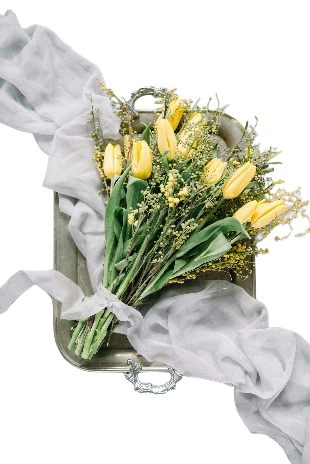

sincere love and admiration
the delicate forget-me-not
a token of fidelity and heartfelt remembrance
deep love, passion, and romance
"I love you" — an expression of strong romantic feelings. Desire and passion — the red color traditionally represents intense emotion and attraction. Commitment and respect — especially in romantic relationships, as red roses can signify a profound level of care and devotion.


heartfelt emotions, gratitude, and love
Perseverance and Endurance: Hydrangeas are known to last and bloom again each year. This trait symbolizes enduring love and commitment, making hydrangeas a fitting representation for lasting relationships.